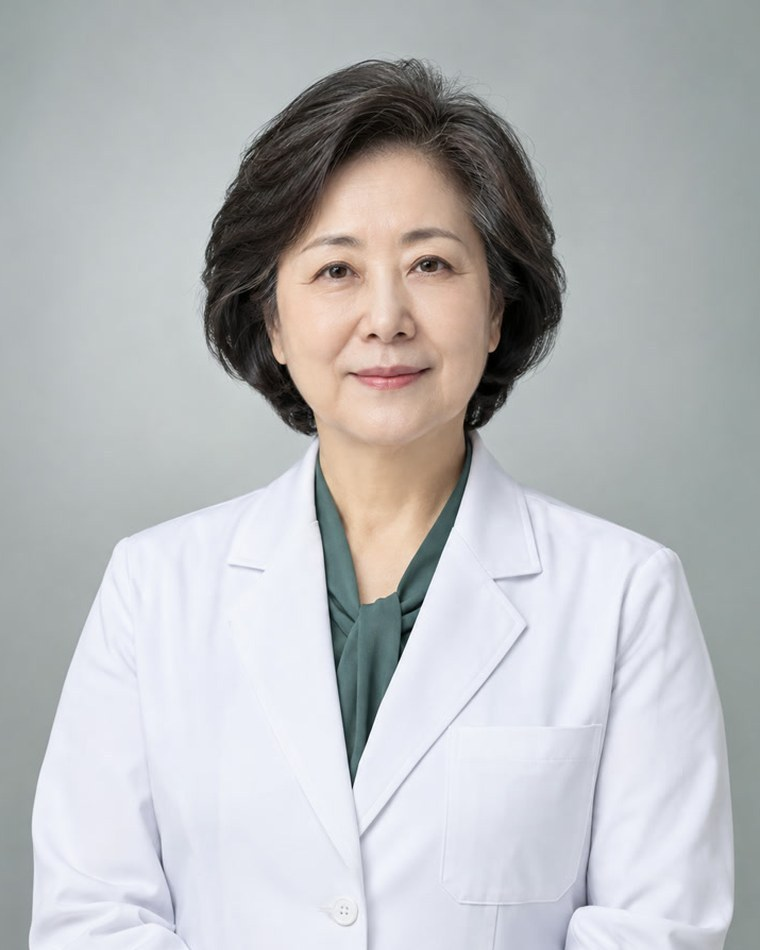

병원장 인사말

안녕하십니까? 한울혈액암병원 병원장 문경호입니다. 한울혈액암병원 홈페이지를 방문해 주셔서 감사합니다.
혈액암은 한때 난치의 대명사였습니다. 그러나 지난 20년 사이 표적치료제와 세포치료가 자리를 잡으면서, 이제는 완치를 목표로 치료 계획을 세우는 질환이 되었습니다. 달라진 것은 약만이 아닙니다. 같은 진단명이라도 유전자 변이에 따라 치료가 달라지고, 그만큼 분야를 좁혀 깊이 아는 의료진이 필요해졌습니다.
한울혈액암병원은 백혈병, 림프종, 골수종, 소아혈액종양, 이식, 세포치료를 각각의 센터로 나누고, 해당 분야를 오래 다뤄 온 전문의가 그 센터를 맡도록 했습니다. 진단검사의학과와 감염내과, 재활의학과, 영양팀과 의료사회복지팀이 한 팀으로 움직여 치료의 공백을 줄이는 것이 저희가 택한 방식입니다.
또한 긴 치료를 견디는 것은 환자 혼자가 아니라는 점을 잊지 않으려 합니다. 혈액암가족돌봄센터를 두어 보호자의 상담과 교육, 심리 지원까지 함께 맡고 있습니다. 난치에서 완치로, 그 길을 환자와 가족 곁에서 끝까지 함께 걷겠습니다.
한울혈액암병원 병원장문경호